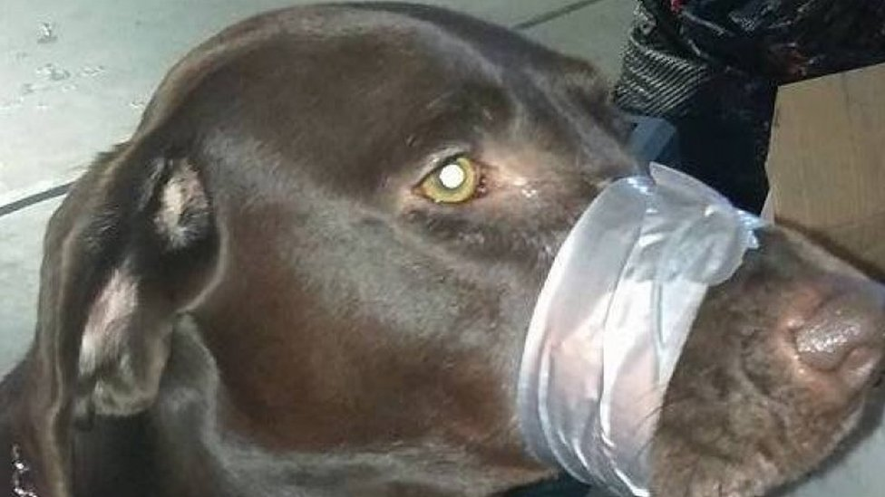
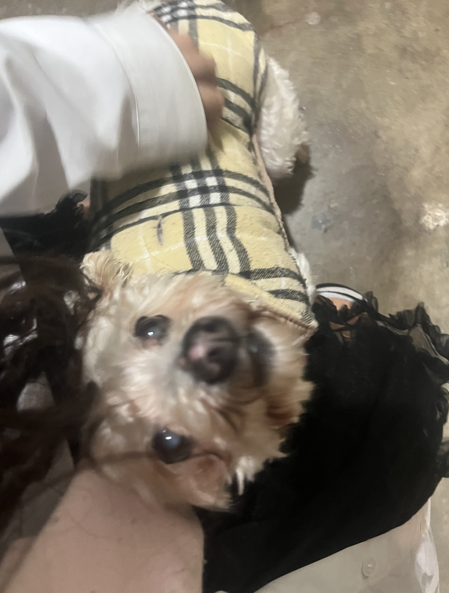

⊹˚. ♡ welcome to my blog! ♡ .˚⊹
��|21|TME|she/her|brown latina
The first time I saw the word bitch was in a book about dogs. It was something about how to properly care for your bitch.
Is being a bitchgirl contradictory? Every bitch is a girl but is every girl a bitch? This website was made by a girl
who feels like a bitchgirl, a girl who feels like a bitch. My dog always knew the best places to sleep anyways.


Ive always been really passionate about dogs and how much I like them especially since I relate to them so much. A lot of the writing I did for
the bitchgirl diaries was actually based on a two hour rant I gave to a friend where I mainly just cried over dogs.
If I'm being honest I cannot understand most of what I said in those audio recordings because I really bawling but here are some highlights along with my elaboration on them.
♡ Like- *sniffles* doggirl means so many different things to different people like *SNIFFLES* idk like doggirl to me- like the reason I resonate with dogs is because im freaking BROWN like-like-like a cat can be an asshole like a cat can bite people and scratch people and its just oh the cat is independent and you need to give the do-d-cat some space or whatever but if a dog bites you a dog freaking gets put DOWN and like thats why i- why i relate to dogs more than cats because i dont GET to be a cat and i dont GET to be independent because im mean or whatever- and- but like- but like i dont even like want to be mean- *sniffles* *sniffles* *mumuring* its just hard sometimes- i dont know- *sniffles* i like dogs- i really like dogs- and like the freaking festival in bolivia- thats so cool- i need to be in bolivia on august- like- 15th or 16th or whatever so I can see a bunch of dressed up dogs that seems great
I actually forgot about that! August 16th in Bolivia is St. Roch's day. St. Roch was the patron saint of dogs so people take that day to celebrate our relationship with dogs.

♡ i- like ohmygosh- i know so many dogs that people hate because they have annoying traits that cats are TOTALLY allowed to have- like ♡♡♡♡♡♡- like MY MOM is not a ♡♡♡♡♡♡ fan because shes a brat and she will push the limits of what shes allowed to do- but you know what SHES FREAKING SMART FOR THAT- and same tbh- but like- if- if like- if a cat- she says shes like a cat for that-
and honestly she is like a cat but why are those considered cat traits- theyre just traits that cats are allowed to have opposed to dogs having them because dogs act like that too if theyre allowed to if theyre not HIT or BEATEN of it- like out of them- and like ☆☆☆☆☆☆☆- and she was so loud and like she loved playing and barking at you- and like- i miss ☆☆☆☆☆☆☆ she was so sweet *pauses*
sorry *gasps* um- but like my mom always said she didnt like her because like she was loud or whatever and like when you would pet her she would get so excitied and like and bark for you to pet her some more and she like would always get the zoomies and was so sweet *sniffles* like ☆☆☆☆☆☆☆ was such a sweet dog *gasps* but like people didnt like her because she was kinda annoying but i
loved her like she was like- *sniffles* like *sniffles* one of my favorite dogs ever *sniffles* and like that happens to so many dogs people just wont like them because they have these annoying little traits- and that makes me so sad like-
like i dont know-
♡ more people should like dogs but not like- like- oh i want an obedient little dog or whatever- like like i want a loyal animal- like in a *sniffles* *gasps* i appreciate *gasps* the dog for who they are not because they listen to you or whatever
♡ like i get why people want to be dogs and like- like- *gasps* i dont know- i love dogs- *mumuring* and i respect the puppygirls- and like i respect the puppygirls- even if its like- and i get the want to be- whatever- same- but like- i dont even know where im going with this- i love dogs- dogs are great
This brings me to why I got triggered enough to start crying over dogs for two hours. I ended up on the catgirl & puppygirl side of tumblr, predominantly inhabited by puppygirls. If you pay attention to what sort of affection these puppygirls crave,
their prominence makes sense. Most everyone loves puppies, people want take care of puppies, puppies are valued and treasured and protected. Who doesnt want this? Especially when you already get treated like a dog. In that sort of world why would you not want to be a puppy,
at least a puppy. This is what made me so frustrated. I had seen this in 4chan (already a red flag (¬_¬)p) puppygirl psyop post ppl were passing around about how being a puppygirl is bad as it normalizes being a submissive little pet. The problem with this is this is a problem already
existing before puppygirls, puppygirls are more so a coping mechanism than anything which is blatantly clear when you look at the things members of underprivileged groups go through. The lack of catgirls is understandable. The catgirl is not relatable, the catgirl is not accessible, the catgirl is not attainable.
Hence it makes sense why these underprivileged groups would clambor to the puppygirl rather than the catgirl.
As a disclaimer, I dont even really identify with the puppygirl personally. If anything I think I am a kickedstreetdoggirl but I dont think that role would bring much of anybody comfort.
Despite this I respect the puppygirls and the catgirls, we all cope in different ways. At the same time I dont think you need to bring down someones comfort role to bring up your own especially when you think about dogs.
Why do we use bitch as an insult- why is dog an insult- why is mutt an insult- why do we only value "mans best friend" when they are subservient- when they are perfect- when they are the ideal companion-
All the things I was ranting about for two hours are things just as applicable to underprivileged groups.
The ability to be loved while less than perfect is something only allowed to people who are already seen as human, those who are not must constantly be proving their humanity.
What makes this ironic is we are held to this impossible standard that these bigoted privileged bodies believe they themselves reach, but absolutely fall short of. We are not asked to be like them, but be like their ideal, something impossible for even them. Hence there is nothing we can truly do to be seen as human
by their standards. We are seen as nothing but bitchgirls.

♡ I really love dogs *sniffles*
I really do love dogs.
There are a lot of things I didn't even get to touch on in this rant or in the bitchgirl diaries. For example, the difference between white women and bitchgirls. Not saying that a white woman cant be a bitchgirl but part of being a bitchgirl I wasnt able to touch on as much as I wanted is bitchgirl fear, something very
different from white woman fear. I now quote a gaia online journal entry.
♡if anything i should be the one whose scared- why do i have to do everything scared im literally scared all the time- im so scared all the time- all the time- why does it feel like my fear is- less- harmful i guess- i dont know it compounds with the racism i experience and i just feel extra gross- i just have to
be a scared little dog all the time just begging and maybe youre afraid of street dogs and that makes it okay to put me down because my scared little dog fear means nothing compared to big real human fear- thats just how its been all my life- i run around scared but still end up having to hide that because- white girl
fear is somehow more important-
This isnt to say there arent marginalized white women who feel like bitchgirls. There is definitely intersectionality, but a lot of the white women I am surrounded by are those who have far more privileges than me in large part due to their whiteness. To be a bitchgirl is to be dehumanized.
While being female is part of this, too is the validity of your femininity. White woman femininity is treasured, precious, nurturing and warm while brown and black girl feminity is lustful, dirty, and sinful. Were nothing but bitches in heat. A bitchgirl is a dehumanized woman, not only for her feminity, which is why the white bitchgirl is not
a bitchgirl through soley her feminity. There are many things which could keep a white woman from full access to white privilege, and eventually to her dehumanization. The psyop post mentioned earlier was actually about transfems which is a good example of another dehumanzied group of women, a good portion of them white,
most of which would know what its like to be seen as a bitchgirl.
With that disclaimer Id like to go back to the topic of
bitchgirl fear. I feel as if that our own discomfort is expected, no, demanded of us, in order to make the other feel more comfortable. Our fear is threatening, while their fear indicates a threat. What complicates this is at the same time you cannot even gain safety by denying your oppression, by supressing your fear. I will say
there are definitely traitors, those willing to barter with those who delight in oppressing them in exchange for temporary saftey, but soon their rights will be next. There is no real escape.
You arent allowed to be a bitch or a girl, you must be a bitchgirl. All we can do is be obedient and loyal. A subservient bitchgirl.

I myself have found comfort in the label of bitchgirl as it makes me feel closer to other women treated as bitchgirls. There are so many reasons you could be treated as a bitchgirl and I think through solidarity with one another we can find comfort especially in a world where we
are constantly pushed to turn against one another. Some of my closest friends have not been people exactly like me, but people who know what its like to be me through a completely different axis of oppression, myself understanding what its like to be them in turn through my own struggles. All of us know what its like to be bitchgirls. Its not so much labels which define us
but a shared experience. This is not to deny my own privileges over other bitchgirls, I as do other privileged people have the responsibility to lift up those we have power over but I think standing with those next to us is important as well, even if its through the bars of different dog crates.
If you know someone who might be treated as a bitchgirl please be sure to take extra care to make sure they know you value them for more than their kindess and warmth and love, for what they give you and how good they are to the world, but for who they are as a person. Give them space to be sad, scared, angry. Give them space to stop
begging to be seen as a human.
If you have a dog please give them 1 billion kisses.


This is my baby!
Shes like my dog soulmate.

Everything about her is perfect to me. I'm so happy Ive been able to spend most of my life with her.
Whenever I think about how old she is I get really sad bc she will always be a puppy to me. Ily my forever baby.


![Chart with images and descriptions of all the mameshiba characters as listed
,Edamame:Full of curiosity and loves to travel around the world seeking adventure
,Black bean : Has a tendency to stare and likes to hide
,Natto : This sweaty bean is sticky too - in that it sticks to its convictions.
,Peanut: Likes to try new things, and always thinks outside the shell.
,Green peas: Like peas in a pod... they hate to be alone, and cannot ever be apart!
,Fava bean: Is laid-back and unflappable.
,Chickpea: A bit naughty and a bit selfish. Hates to be alone.
,Lentil: A math and computer whiz. Keeps a close eye on things.
,Tiger bean: Self-centered and a bit forgetful when it comes to returning items.
,Chili bean: Passionate and cheesy, this bean is on the lookout for romance.
,Cocoa bean: Is naive about most things, and believes just about anything!
,Almond: Really uptight, but good thing it has its friend Cocoa Bean!
,Red bean: Very sharp, speedy, and extremely polite - this bean is quite popular.
,Cashew nut:Twisted and tends to say things that alienate others.
,White soybean: A true poet with a pure soul. Has never doubted a single bean. Ever.
,Black soybean: This athletic bean's willpower is as strong as its rock hard abs.
,Soybean: A compulsive worrier & health nut that likes to give unsolicited advice.
boiled bean Compassionate and always willing to help others. Looks fresh!
,Pistachio: This reclusive bean doesn't say much, and tends to hide in its shell.
,Sword bean: Is known for its honesty and loyalty. Just like a Samurai warrior!
,Coffee beans: They give great advice, and are always composed.
,Sweet beans: They are old and wise. Just like your grandparents!
,Jelly beans:They are from the USA and don't speak Japanese very well...
,The scream: Is a complete mystery. Has never really been seen by any bean.](dogs/mameshiba.jpg)